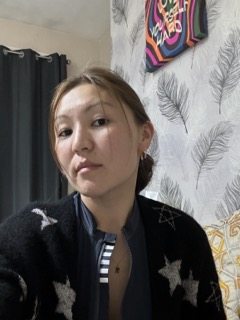

Zhyldyz Baktybekova

Bio
I am a keen to learn quick,
explore and share new things.
My dream is to become a software engineer.
Skills
- Beginner Web Developer
- Communication skills
- Fluent in Russian
Education
- 2009-2014 Bachelor Degree in Teaching, Kyrgyzstan
- 2015 Teaching Course, England
Work Experience
- 2014-2015 Teacher at Secondary School
- 2019-2013 Nanny at Tinies link
- Full Name: Zhyldyz Baktybekova
- Contact Number: 07474906898
- Email: jyldyz.baktybekova@mail.ru
- LinkedIn: link
Back to Top